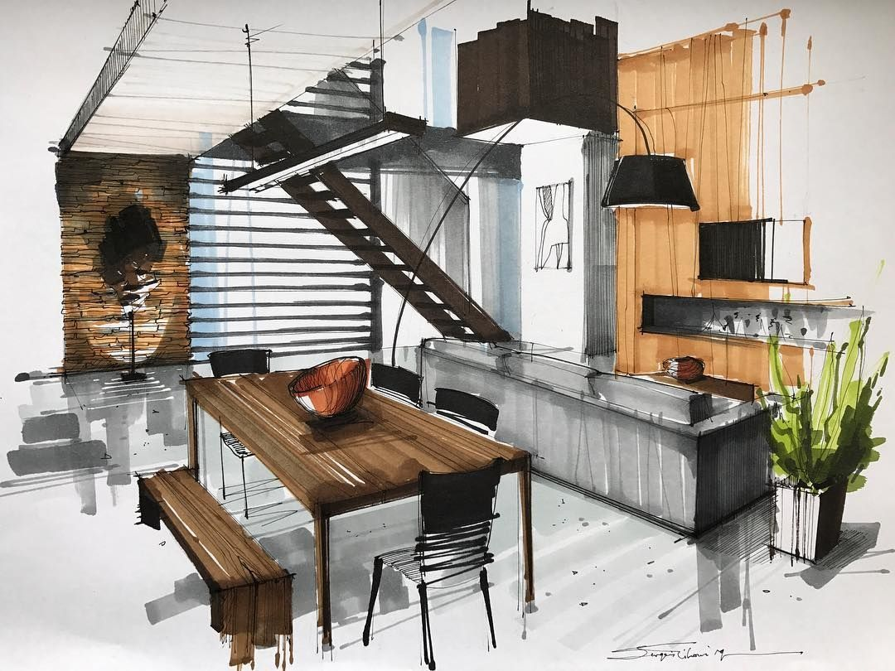

|  |
Everything is digitized nowadays, no matter in which field you are working, and everyone is demanding digitalization. The speed with which we are accepting digitalization that day is not far when we will digitally have exposure to everything. Thanks to the usage of digitalized technology, interior design has now been quite simple from any angle. Now any interior designer at the corporate office or home can deliver his services online. It is also assisting interior designers to be less affected by COVID-19 pandemic. How is digitalization reforming the interior designing?transformed into practice – Every person has different thoughts of thinking about how they want to build their unique spaces, and digitalization is a way to help them turn their view into live. It is benefiting interior designers in several other respects, too as by assisting them in designing their furniture, color of the wall, and decor. |
|
Condition management – is curious about the designing project and wants to know where and what is going with their designing projects. Technology provides an opportunity to realize what is happening and when and how it is happening. It helps you determine every process that is taken while designing the interior. Every person Versatile abilities it helps you to do practically anything. For example, if you plan to change your home decor’s positioning, you do not have to adjust everything manually, you have to change the virtual design and then see how it looks and execute it afterward. Better client engagement – Digitization makes two-way interaction systems more effective. Even the clients get a clearer understanding of the reputation and position of the company. It helps the client and the company properly communicate and consider the customer’s desires and wishes, eliminating all the gaps between them. Thus, it strengthens the relationship between client and company. Cost-effective – Digitization has rendered the design process cost-effective because all the problems are addressed by online discussions, which reduce the chances of any dispute. It tends to reduce expenses because it enables regular tracking of tasks. |
Customization – Although we all know technology has progressed so much that digitalization helps us customize anything. The digital design applications are a plus point for the interior designers and homeowners, as they can make changes according to their design plan. Customization was complicated before, but now it has been a lot easier and comfortable with the integration of digitalization with interior design. Increase in productivity – All these advantages of digitalization eventually improve the output; that is the central aspect. What else would you expect from digitalization if productivity increases? For whatever job you do, productivity is the top priority, so if you achieve it by digitalization, it is the right way. Creativity – Digitization also enhances creativity by combining technology with interior design, and it is once again a hugely advantageous factor for interior designers and the client. Creativity is the most significant feature of the interior design higher is the creativity higher will be sales and productivity. Digitization helps artists to think creatively and often adds singularity to their creations. Creativity can help you seize more and more opportunities. |